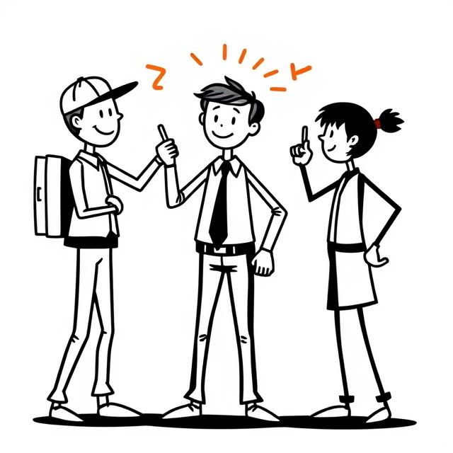

- Orientar y asesorar sobre recursos y servicios destinados a las personas con discapacidad y a sus familares

- Tramitación de las diferentes ayudas
- Diseñar proyectos y programas de integracion social psicologica y rehabilitacion, dirigidos a mejorar la calidad de las personas con discapacidad y sus familiares
- Realizacion de la memoria anual , seguimiento del gasto presupuestario y justificacion de subvenciones
- Facilitar su desenvolvimiento en la vida cotidina y la normalizacion de sus condiciones de vida
- Promocionar el empleo y la formacion entre las personas con dispacacidad
- Promover, orientar y estimular la ayuda mutua entre los discapacitados
- Propiciar la insercion de las personas en su ambiente familiar y social contribuyendo a potenciar la supresion de las barreras que impiden una integracion plena